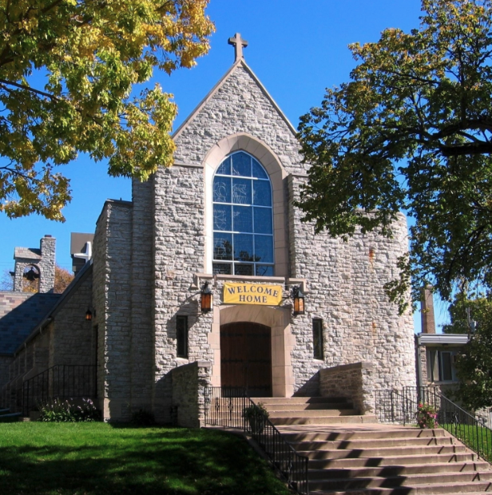

Where do I park?
There is usually plenty of street parking around the church, and a few handicap spots are available close to the door.
New to Pilgrim? Here is the simple version: worship is Sunday at 9:30 AM, and we would be glad to meet you.
First Sunday
Pilgrim is a friendly church, and no one expects a visitor to have everything figured out. Come in, find a seat, and participate as you are comfortable.
People often arrive early to talk, and many stay after worship for Coffee + 5. If you want to meet someone, that's a good time. If you prefer to slip in quietly and observe, that's fine too.
Sunday Worship
9:30 AM year-round
Sunday Bible Study
8:30 AM
After Worship
Coffee + 5 with snacks, drinks, conversation, and a short devotion
Location
3901 First Ave S
Minneapolis, MN 55409
There is usually plenty of street parking around the church, and a few handicap spots are available close to the door.
You will see a range from casual to more dressed up. Come as you are.
Children are welcome in worship, wiggles and all. If you need to step out, there is space to do that, but no one expects kids to be perfect. Jesus said, "Let the little children come to me."
Questions Before You Come?
If you have a pastoral question, want to know what to expect, or are thinking about returning to church after time away, someone at Pilgrim would be glad to talk.
Contact Us